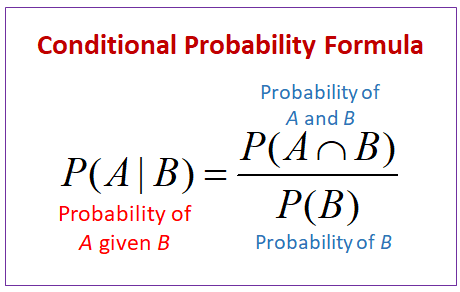

How does conditional probability work in this game?


Mathematically given an event B , probability of event A is calculated as probability of events A and B occurring together divided by the probability of event B.
P(Winning)=A*C + B*D
A = 1/3, B=2/3
C = 1(Car was selected and door not switched)
D = 0(Goat selected and door not switched)
Hence probability of winning = 1/3 = 33.33%
P(Winning)=A*C + B*D
A = 1/3, B=2/3
C = 0(Car was selected and door switched)
D = 1(Goat selected and door switched)
Hence probability of winning = 2/3 = 66.66%